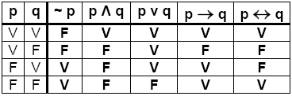
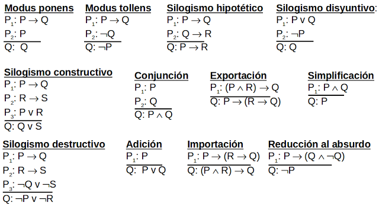

Conceptos básicos
- Sentencia declarativa
- Una sentencia declarativa es una oración que afirma algo.
- Proposición
- Una proposición es una sentencia declarativa que debe ser verdadera o falsa pero no ambas.
- Proposiciones Primitivas
- es una proposición que no se puede descomponer en hechos más simples.
- Proposiciones Compuestas
- están formadas de varias proposiciones primitivas
- Argumento
- Es una secuencia estructurada de afirmaciones que terminan en una conclusión.
Operadores Lógicos
- Negación: ¬p (Léase “no p”)
- Disyunción: p ∨ q (Léase “p o q”)
- Conjunción: p ∧ q (Léase “p y q”)
- La Condicional: p->q (Léase si P, entonces Q)
Simplicar
Tablas de verdad
Una tabla de verdad de una proposición es una descripción organizada de los valores de verdad de la proposición para todos los valores posibles de la variables proposicionales que aparecen en ella.

Reglas de Inferencia
Una regla de inferencia es una forma lógica que contiene una función que toma de entrada premisas, analiza su sintaxis y retorna una conclusión.
